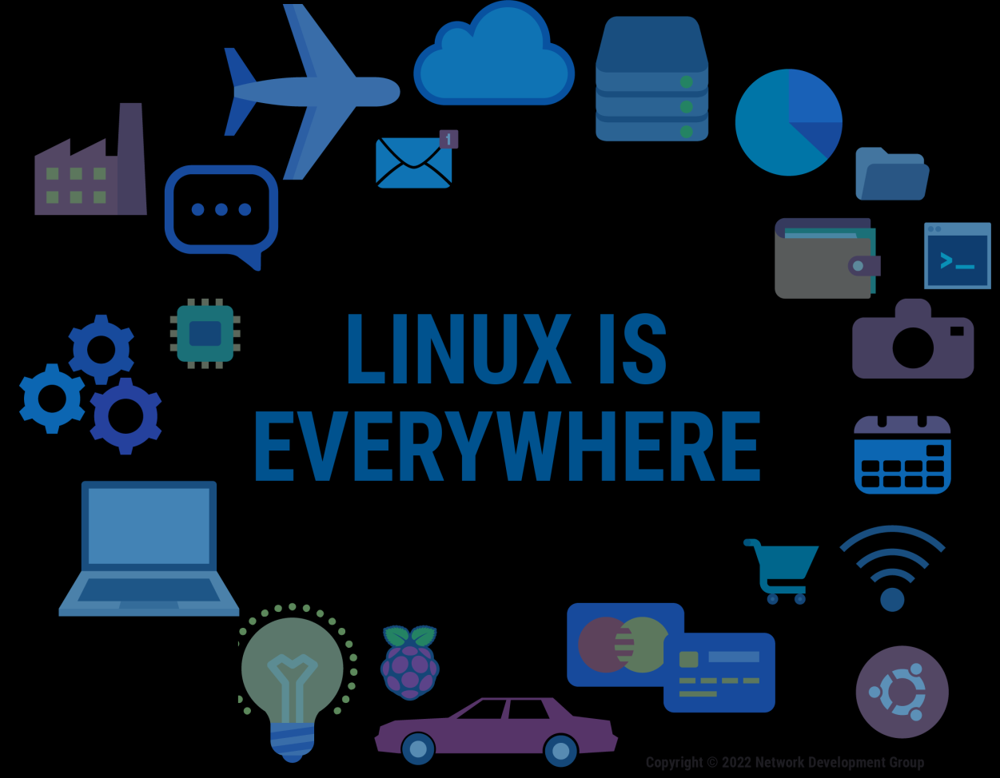

Operating Systems
Linux Distribution & Lab 1
01
Linux Distribution - Distro

02
Linux Distribution - Distro
- A Linux distribution (distro) is an operating system made from a software collection, which is based upon the Linux kernel and, often, a package management system.
- A typical Linux distribution comprises:
- A Linux kernel
- GNU tools
- Others: libraries, additional software, documentation, a window system (the most common being the X Window System), a window manager, and a desktop environment.
- ~500/600 distros are in active development.
02
3 / 30
Timeline of Distro
03
4 / 30
Timeline of Distro
03
5 / 30
Layers of Linux Distribution
04
6 / 30
Linux Origin
- Linus Torvalds developed 1st version 0.01 in 1991.
- Linux was initially distributed as source code only.
- Later as a pair of downloadable floppy disk images:
- A bootable and containing the Linux kernel
- The other with a set of GNU utilities and tools for setting up a filesystem.
Linus Torvalds
1969 - Present
06
8 / 30
Package Management
- Distributions are normally segmented into packages. Each package contains a specific application or service.
- Packages are bundles of software and metadata such as the software's full name, description of its purpose, version number, checksum, and a list of dependencies necessary for the software to run properly.
- A Package management system (package manager) is a collection of software tools that automate the process of installing, upgrading, configuring, and removing computer programs for a computer's operating system in a consistent manner.
07
9 / 30
DPKG
- DPKG is a package manager for Debian-based systems. It can install, remove, and build packages, but unlike other package management systems, it cannot automatically download and install packages or their dependencies.
- Detail of DPKG usage: man dpkg
- Example of DPKG:
- dpkg -l — list all installed packages
- dpkg -l | grep xxx — check if a specific xxx is installed
- sudo dpkg -i xxx.deb — install xxx.deb
- sudo dpkg -r xxx — uninstall xxx
08
10 / 30
APT
- The apt command is a powerful command-line tool, which works with Ubuntu's Advanced Packaging Tool (APT) performing such functions as installation of new software packages, upgrade of existing software packages, updating of the package list index, and even upgrading the entire Ubuntu system remotely.
- Detail of APT usage: apt help
- Example of APT:
- sudo apt install xxx — install xxx
- sudo apt remove xxx — remove xxx
- sudo apt update — update the local package index
- sudo apt upgrade — update packages and system
09
11 / 30
What is a shell?
- 1. Once a user has entered a command the terminal then accepts what the user has typed and passes it to a shell.
- 2. The shell is the command line interpreter that translates commands entered by a user into actions to be performed by the operating system.
10
13 / 30
What is a shell?
- 1. When a terminal application is run, and a shell appears, displaying an important part of the interface — the prompt.
- 2. The structure of the prompt may vary between distributions, but typically contains information about the user and the system. Below is a common prompt structure:
sysadmin@localhost:~$
10
14 / 30
What is a shell?
The ~ symbol is used as shorthand for the user's home directory.
10
15 / 30
Lab 1 — Hands-on
Exploring Operating System Basics
Duration: 2 Hours | Individual Lab
16
Lab Objectives
- Identify basic operating system and kernel information
- Use essential Linux file and directory commands
- Install, remove, and purge software using APT
- Understand the difference between a program and a process
- Observe multitasking in a running operating system
- Detect whether the OS is running on a virtual environment
This lab establishes a foundation for later labs on process scheduling, threads, and memory management.
LAB 1
17 / 30
Lab Setup
Create your submission folder structure and enter the lab1 directory:
mkdir -p os-se-<YourStudentID>/os-lab-<YourStudentID>/lab1
cd os-se-<YourStudentID>/os-lab-<YourStudentID>/lab1
- Documentation: No Word/PDF — you will use Markdown & Git
- Screenshots: Capture terminal output for each task (
task1.png, task2.png, …)
- Save temporarily to your host machine (Desktop/Pictures folder)
- You will add images to a
README.md at the end of the lab
LAB 1
18 / 30
Lab Workflow Overview
WSL / Linux Terminal
Task 1 → Task 2 → Task 3 → Task 4 → Task 5 → Task 6 → git push
▼
Host OS (Windows / Mac)
Clone Repo in VS Code → Add Images & Write README → Final git push
▼
Local Lab Server (SSH)
SSH in → git clone / git pull into home directory
LAB 1
19 / 30
Output Redirection: > and >>
Commands followed by > or >> send output to a file instead of the screen.
- command > file.txt
- Overwrite — erases the file and writes new data
- command >> file.txt
- Append — adds data to the end, preserving existing content
You will use these operators in every task to save command output into .txt files.
LAB 1
20 / 30
Task 1 — OS Identification
Purpose: Identify the operating system and kernel currently running.
- uname -a — kernel & system information
- lsb_release -a — Ubuntu distribution details
Commands:
uname -a > task1_os_info.txt
lsb_release -a >> task1_os_info.txt
Output: task1_os_info.txt
TASK 1
21 / 30
Task 2 — File & Directory Commands
Purpose: Practice essential Linux file system commands.
- pwd — current directory
- ls — list contents
- mkdir / cd — make/change dir
- touch — create empty file
- echo — print / write text
- cat — display file contents
- cp / mv / rm — copy/move/remove
.. refers to the parent directory. cd .. moves up one level. ../file.txt points to a file one folder above.
Output: task2_file_commands.txt
TASK 2
22 / 30
Task 3 — Package Management (APT)
Purpose: Observe the difference between remove (keeps config) and purge (deletes everything).
- sudo apt-get update — refresh package list
- sudo apt-get install mc -y — install Midnight Commander
- which mc & ls -ld /etc/mc — verify installation
- sudo apt-get remove mc -y — uninstall binaries (config remains!)
- Check: ls -ld /etc/mc → folder still exists
- sudo apt-get purge mc -y — remove everything
- Check: ls -ld /etc/mc → "No such file or directory"
TASK 3
23 / 30
Task 4 — Programs vs Processes
Purpose: A program becomes a running process when executed.
- sleep 120 & — run
sleep in the background
& at the end sends the process to the background
- ps — list running processes
Commands:
sleep 120 &
ps > task4_process_list.txt
Output: task4_process_list.txt
TASK 4
24 / 30
Task 5 — Multitasking
Purpose: Install real applications and observe multiple processes running simultaneously.
Optional cleanup: kill %3 stops the web server.
TASK 5
25 / 30
Task 6 — Virtualization Detection
Purpose: Check if the OS runs on physical hardware or a virtual machine.
systemd-detect-virt > task6_virtualization_check.txt
lscpu | grep -i hypervisor >> task6_virtualization_check.txt
uname -r >> task6_virtualization_check.txt
hostname >> task6_virtualization_check.txt
Output: task6_virtualization_check.txt
If running under WSL, systemd-detect-virt will typically report wsl.
TASK 6
26 / 30
Submission — Phase 1: Push to GitHub
- Install tree and verify your folder structure:
sudo apt-get install tree -y
tree
- Create a new empty repo on GitHub:
OS-SE-<YourStudentID>
- Initialize, commit and push:
git init
git add .
git commit -m "Initial commit of Lab 1 text files"
git branch -M main
git remote add origin https://github.com/<you>/OS-SE-<ID>.git
git push -u origin main
SUBMIT
27 / 30
Submission — Phase 2: Document in VS Code
Move to your host machine (Windows/Mac):
SUBMIT
28 / 30
Submission — Phase 3: Pull to Lab Server
After your final push, pull the repo onto the local lab server:
SUBMIT
29 / 30
Expected Folder Structure
os-se-<ID>/
└── os-lab-<ID>/
└── lab1/
├── README.md
├── images/
│ ├── task1.png … task6.png
├── task1_os_info.txt
├── task2_file_commands.txt
├── task2_files/
├── task3_*.txt (7 files)
├── task4_process_list.txt
├── task5_*.txt (2 files)
└── task6_virtualization_check.txt
Checklist before submitting:
- ✅ All
.txt output files present
- ✅ Screenshots in
images/
- ✅
README.md written
- ✅ Pushed to GitHub
- ✅ Pulled to lab server
- ✅ Link submitted to course portal
SUMMARY
30 / 30